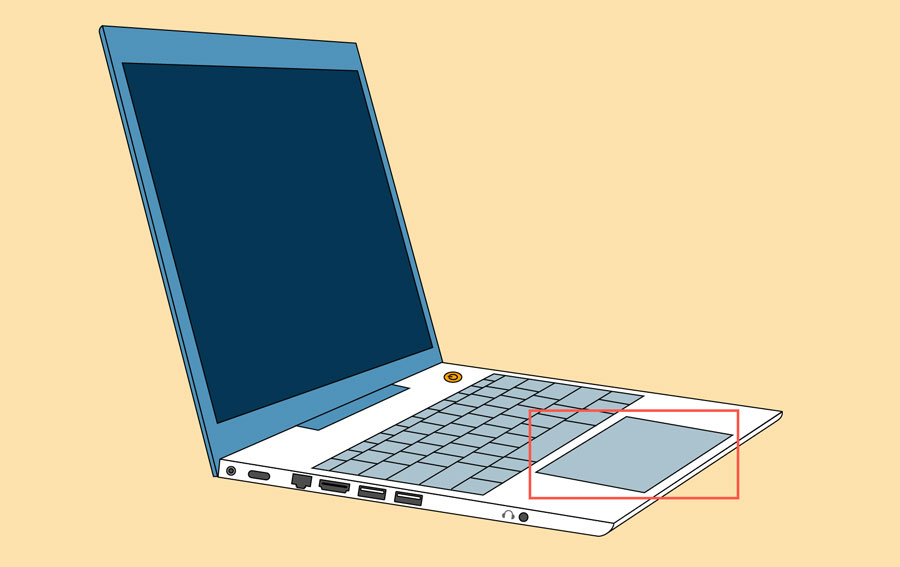
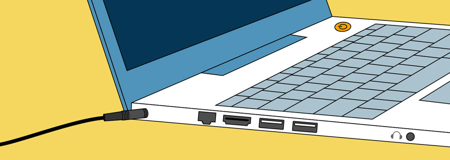

A laptop is a personal computer that can be easily moved and used in a variety of locations. Most laptops are designed to have all of the functionality of a desktop computer, which means they can generally run the same software and open the same types of files. However, laptops also tend to be more expensive than comparable desktop computers.
Because laptops are designed for portability, there are some important differences between them and desktop computers. A laptop has an all-in-one design, with a built-in monitor, keyboard, touchpad (which replaces the mouse), and speakers. This means it is fully functional, even when no peripherals are connected. A laptop is also quicker to set up, and there are fewer cables to get in the way.
Here are the main differences you can expect with a laptop.
> Touchpad: A touchpad—also called a trackpad—is a touch-sensitive pad that lets you control the pointer by making a drawing motion with your finger.
> Battery: Every laptop has a battery, which allows you to use the laptop when it's not plugged in. Whenever you plug in the laptop, the battery recharges. Another benefit of having a battery is that it can provide backup power to the laptop if the power goes out.
> AC adapter: A laptop usually has a specialized power cable called an AC adapter, which is designed to be used with that specific type of laptop.
> Ports: Most laptops have the same types of ports found on desktop computers (such as USB ), although they usually have fewer ports to save space. However, some ports may be different, and you may need an adapter in order to use them.
> Price: Generally speaking, laptops tend to be more expensive than a desktop computer with the same internal components. While you may find that some basic laptops cost less than desktop computers, these are usually much less powerful machines.